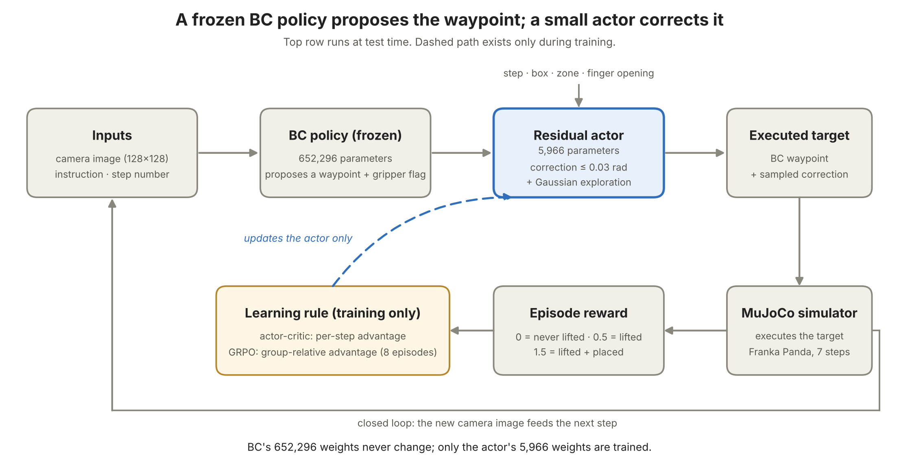

Teaching a Frozen VLA to Fail Less: RL on Top of Behaviour Cloning (Part 2)
Summary
A 5,966-parameter residual policy trained with reinforcement learning improves the behaviour-cloning (BC) VLA from ~50.7% to ~76.3% success on 600 held-out pick-and-place episodes, without fine-tuning the BC weights.
In Part 1 a 0.65M-parameter action-chunking transformer was trained on scripted-expert demonstrations in MuJoCo. It reached about 51% success and plateaued there, because small errors in where it puts the gripper decide whether a grasp works. In Part 2 that model was left completely frozen and a tiny actor was trained on top of it. The actor reads the waypoint BC proposes and adds a small, bounded joint correction (at most 0.03 rad). It learns from a simple reward: 0.5 for lifting the box, plus 1 for placing it in the zone.
The actor was trained two ways, each with 8,000 episodes: an actor-critic method and a GRPO-style method. Both reach about 75% success on the held-out test sets.
1. Why a residual on top
BC knows the task but is imprecise. The expert never fails and never recovers from a mistake, so the dataset contains no examples of correcting a bad grasp or an incorrect drop. Fine-tuning all 652,296 weights with RL would be slow and unstable, and could damage the language and vision behaviour that already works. A tiny actor that only nudges BC's output, capped at 0.03 rad per joint, can fix these errors.
Hardware: a laptop with a GTX 1650 Ti (4 GB). Simulation runs on the CPU and dominates the compute.
2. Setup
- Scene: a Franka Panda on a grey table, three boxes (red, blue, white) and two drop zones (green, pink), giving 6 instructions such as "put the red box in the green zone".
- Episode: 7 steps: above the box, grasp, lift, carry, release, rise, home.
- Success: the target box ends within 4 cm of the zone centre and below z = 0.03 m.
- Reward: 0 if the box is never lifted, 0.5 if it is lifted but not placed, 1.5 if it is lifted and placed. The small lift bonus separates a missed grasp from a good grasp followed by a bad placement.
3. Architecture
The actor reads only BC's output waypoint (plus step, target box, target zone and finger opening), so it never sees BC's internals. Its output is a mean correction, 0.03 rad times tanh of a small network, with a learned Gaussian standard deviation for exploration.

4. Two learning rules
- Actor-critic: 16 episodes per iteration. A small critic predicts the expected return for each situation, and the actor is pushed toward corrections that did better than that expectation.
- GRPO-style: groups of 8 episodes on the same scene and instruction. Each episode's advantage is its reward minus the group mean, divided by the group standard deviation. No critic is needed.
Both use the same actor, reward and budget: 500 iterations, 8,000 episodes, about 70 to 75 minutes on the laptop CPU, with a 1e-3 learning rate for the actor.
5. Results
Test sets are 300 fixed layouts per seed (50 per instruction), on two seeds, with BC run through the same code as a control.
| Policy | Seed 123 | Seed 456 | Pooled (600) |
|---|---|---|---|
| BC alone | 150/300 (50.0%) | 154/300 (51.3%) | 50.7% |
| BC + actor-critic | 227/300 (75.7%) | 231/300 (77.0%) | 76.3% |
| BC + GRPO | 220/300 (73.3%) | 232/300 (77.3%) | 75.3% |
At 60 validation episodes the standard error is about 6.5 points, so the two methods are read as a tie.
6. What I learned
- A correction of at most 0.03 rad moved success by about 25 points, which suggests BC's errors are small and systematic rather than conceptual.
- GRPO needs variation to learn: early on the eight attempts in a group are almost identical, so the advantage signal is weak. It took off once exploration produced real differences.
- The learned standard deviation barely moved (0.01 to 0.0098), so the gain came from shifting the mean correction, not from more exploration.
- Small validation sets mislead: validation started at 62% while the 300-episode test sets put BC at 50.7%. The headline numbers rest on the test sets.
7. Limitations
- One training seed per method; the GRPO versus actor-critic gap is within noise.
- Toy task: one scene, one camera, three boxes, two zones. The gripper command is still BC's.
- Black-box only: the actor cannot fix errors that need visual information BC discarded.
- Simulation only.
Code
[Link to the GitHub repository goes here.]
Reference
H. Li et al. SimpleVLA-RL: Scaling VLA Training via Reinforcement Learning. arXiv:2509.09674, 2025.